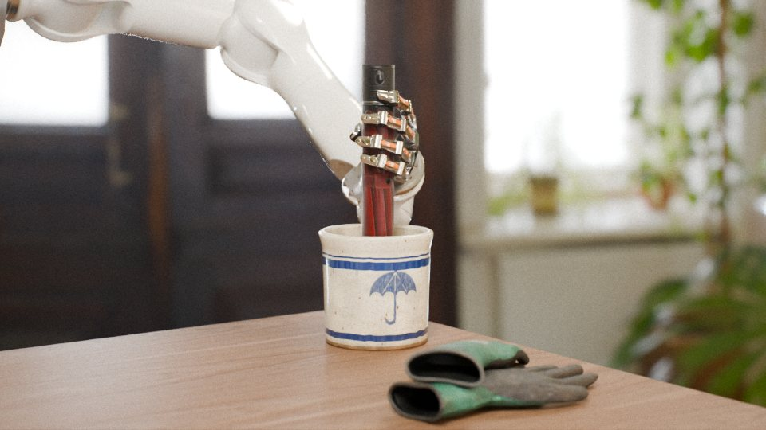

dashboard · all 50 tasks: trials and success rate · this task in the gallery · generated 2026-11-26 10:12 EST by python s2/s2loop/daily50_trials_page.py

Put the umbrella in the stand by the door.
the instruction S2 was given, read from the trial record (instruction)
FAIL best of 2 trial(s); 0 passed. First attempt (trial 0): FAIL. Not passed in any attempt so far. Played by session agents, probe series — not a counted test series.
written 2026-11-26 03:42 · attempt 2 · played after reading this task's notes · episode index 111 · 8 turns (1 plan, 1 look, 2 act, 1 check, 3 replan) · 1995 ticks of 3000 used by the turns · run 20261126T081740Z-565ed835 · session daily50_t32-d46a8d73
The record holds no steps.
The record holds no new steps.
The record holds no new steps.
The record holds no new steps.
| turn | phase | skill | what S2 said it does and why | reply | ticks |
|---|---|---|---|---|---|
| 1 | LOOK | get_task_context + | measure objects, reach of both arms over the stand, grasps of the umbrella (zero ticks) | ok | at 0no motion |
| 2 | PLAN | propose_grasps + | plan+act: sweep the tilted carry of the umbrella through check_plan to find how near the stand must be, then push the stand toward the right arm's reach with the left fist | not okik_unreachable | at 0no motion |
| 3 | ACT | slide x24 | slide the stand about 22 cm toward the right arm with the left fist (variants of fist face, start and height until one is accepted), then left arm home | not okplanning_failed | at 0no motion |
| 4 | REPLAN | slide x6 + | replan+act: the fist's start behind the stand grazes the stand's camera shadow; slide it along a line turned 10 to 20 degrees so the fist starts on the seen side, then left arm homereason: replan+act: the fist's start behind the stand grazes the stand's camera shadow; slide it along a line turned 10 to 20 degrees so the fist starts on the seen side, then left arm home | not okplanning_failed | 0–67313.5 s |
| 5 | CHECK | get_robot_state + | the stand did not move under the left fist; measure the left hand, and sweep how far toward the fixed stand the right hand can bring the tilted umbrella (zero ticks) | ok | at 673no motion |
| 6 | REPLAN | retreat + | replan+act: the stand is fixed; left hand home, then ONE commit: attach the umbrella, carry it level to across the stand's opening with its middle inside the rim (first accepted of a check_plan sweep), let go in place, reach awayreason: replan+act: the stand is fixed; left hand home, then ONE commit: attach the umbrella, carry it level to across the stand's opening with its middle inside the rim (first accepted of a check_plan sweep), let go in place, reach away | not okplanning_failed | at 673no motion |
| 7 | REPLAN | get_robot_state + | replan+act: free the left hand by a short rise of its own and send it home; then ONE commit: attach the umbrella, carry it turned and tilted 40 to 60 degrees so its lower end hangs over the stand's opening from the robot's side, let go in preason: replan+act: free the left hand by a short rise of its own and send it home; then ONE commit: attach the umbrella, carry it turned and tilted 40 to 60 degrees so its lower end hangs over the stand's opening from the robot's side, let go in p | ok | 673–8924.4 s |
| 8 | ACT | attach x43 + | ONE commit of the first accepted plan: attach the umbrella, carry it to the fixed stand (tilted with its lower end inside the opening if reachable, else level across the opening with its middle inside the rim, else lower end over the c | ok | 892–199522.1 s |
Ticks: the tick range the turn moved the robot over (one tick is 20 ms). ▶ m:ss under a turn number is where that turn starts in the video; click a row to go there.
| skill | ok | the skill's own verification (head camera, joint and servo effort) | what the record showed afterwards |
|---|---|---|---|
| push | not ok | — | |
| push | not ok | — | |
| push | not ok | — | |
| slide | not ok | — | |
| slide | not ok | — | |
| slide | not ok | — | |
| slide | not ok | — | |
| slide | not ok | — | |
| slide | not ok | — | |
| slide | not ok | — | |
| slide | not ok | — | |
| slide | not ok | — | |
| slide | not ok | — | |
| slide | not ok | — | |
| slide | not ok | — | |
| slide | not ok | — | |
| slide | not ok | — | |
| slide | not ok | — | |
| slide | not ok | — | |
| slide | not ok | — | |
| slide | not ok | — | |
| slide | not ok | — | |
| slide | not ok | — | |
| slide | not ok | — | |
| slide | not ok | — | |
| slide | not ok | — | |
| slide | not ok | — | |
| slide | not ok | — | |
| slide | not ok | — | |
| slide | not ok | — | |
| slide | not ok | — | |
| slide | not ok | — | |
| slide | not ok | — | |
| slide | ok | — | |
| go_home | not ok | — | |
| retreat | not ok | — | |
| go_home | not ok | — | |
| execute_plan | ok | — | |
| go_home | ok | — | |
| commit_plan | ok | — |
written 2026-11-25 11:55 · attempt 1 · played without this task's notes · episode index 0 · 11 turns (1 plan, 4 look, 5 act, 1 check) · 578 ticks of 3000 used by the turns · run 20261125T164108Z-d8556415 · session daily50_t32-e5bc41ff
FAIL: rule wanted the umbrella standing in the stand (tip end within 0.045m of the stand axis, umbrella axis within 35 deg of the stand axis, handle up). Infeasible: the stand is beyond the right hand's reach and there is no second usable hand.
Reason video, 36 s, 0.48 MB. The picture is the robot's head camera, drawn from the flight record after the session (the one view S2 has). The left panel's colour is the phase; the caption is what S2 said it does; a turn that moved nothing is held as a card (the plan's steps, the picture S2 looked at); the ticks after close play at double speed in grey. The status is on the last card only.
The record holds no new steps.
| turn | phase | skill | what S2 said it does and why | reply | ticks |
|---|---|---|---|---|---|
| 1▶ 0:02 | PLAN | plan | put the umbrella (#4) into the stand (#1) by the door | ok | at 0no motion |
| 2▶ 0:05 | LOOK | propose_grasps+ | propose grasps for umbrella, point_at ends and stand, solve_ik right-hand reach to the stand | ok | at 0no motion |
| 3▶ 0:07 | LOOK | solve_ik (bimanual reach) + | test left-hand reach, right +y reach, umbrella class candidates | ok | at 0no motion |
| 4▶ 0:08 | ACT | acquire | acquire umbrella with the only feasible clip (screw, other_shape), lift 8cm | ok | 0–2685.4 s |
| 5▶ 0:14 | CHECK | clear_view | clear view + estimate_in_hand to verify carry | not okplanning_failed start_scene_collision (finger 3.4mm from neighbor while holding) | at 268no motion |
| 6▶ 0:16 | LOOK | look | look to see current geometry | ok | at 268no motion |
| 7▶ 0:17 | ACT | set_down | set umbrella down toward center-right open space | not okplanning_failed path_scene_collision (flange 1.6mm from object #3) | at 268no motion |
| 8▶ 0:19 | ACT | set_down | set umbrella down nearly straight down at origin | not okplanning_failed path_scene_collision (finger 0.6mm from object #3) | at 268no motion |
| 9▶ 0:20 | ACT | release_in_place | release umbrella in place (stand unreachable) | ok | 268–4473.6 s |
| 10▶ 0:24 | ACT | clear_view | clear empty hand from view | ok | 447–5782.6 s |
| 11▶ 0:27 | LOOK | look | final look | ok | at 578no motion |
Ticks: the tick range the turn moved the robot over (one tick is 20 ms). ▶ m:ss under a turn number is where that turn starts in the video; click a row to go there.
| skill | ok | the skill's own verification (head camera, joint and servo effort) | what the record showed afterwards |
|---|---|---|---|
| propose_grasps | ok | umbrella own class cylD40L250C_local_mocap (err 0.01) exists but ALL placements planner_refused (feas 0); only screw_local_mocap other_shape gave 1 feasible grasp | — |
| solve_ik (reach) | ok | right hand reaches umbrella and up to ~y+0.15; NOT the stand (y+0.47, ~400mm short, joint2 limit). Confirms capability card rule 7: far half of table out of reach of both hands. | — |
| acquire | ok | grip_opposed=true, thumb 9.0N, grip_loaded=true, place ~56% seen empty; umbrella lifted and carried (held=unknown only because hand hid its inside; visually off the table) | not read beyond status |
| clear_view (1) | not ok | planning_failed start_scene_collision: finger 3.4mm from a neighbor while holding; straight-up did not clear | — |
| set_down (x2) | not ok | planning_failed path_scene_collision: flange/finger ~0.6-1.6mm from object #3 (the re-perceived held umbrella) on the approach move; could not plan | — |
| release_in_place | ok | landed=yes, offset 2.6cm; umbrella dropped back onto the table, hand empty (release_in_place declares the held object's zone so it planned where set_down/clear_view were refused) | — |
| clear_view (2) | ok | robot_share_after 0.008, empty hand out of view | — |
NOTES.md)# t32_umbrella_stand notes (append-only)
- 2026-11-25 (trial_0, attempt 1, episode 0): FAIL. Instruction "Put the umbrella in the stand by the door."
- Umbrella = #4, a 25x4x4 cm dark cylinder at x~-0.40, y~-0.45 (near-RIGHT), long axis ~world y. Stand = #1, an upright open white pot (14 cm, top_z 1.03) at x~-0.34, y~+0.47 (far-LEFT, by the door). Other objects: #0 green glove, #2 round plate, #3 flat object (center), #5 small disc.
- propose_grasps(#4): the own class cylD40L250C_local_mocap (err 0.01) has NO feasible placement (all planner_refused); only the screw_local_mocap other_shape clip gave 1 grasp. Passed that grasp explicitly to acquire.
- acquire(#4, grasp=screw, lift 8cm): grip_opposed=true, thumb 9N, lifted and carried (visually off the table). The carry WORKED this time (contrast the known 'stayed tilted' reading).
- DECISIVE: solve_ik shows the stand (y+0.47) is ik_unreachable by the right hand (joint 2 at limit, ~400mm short, at every height). The left hand reaches the stand but NOT the umbrella; and only the right hand is usable by any skill (no relay/handoff). So the umbrella cannot be delivered to the far-half stand - infeasible from this layout. (Capability card rule 7: the far half is out of reach of both hands.)
- Finishing was itself hard: holding the umbrella amid clutter, clear_view and set_down were refused (finger/flange ~0.6-3.4mm from a neighbor / the re-perceived held umbrella). release_in_place succeeded (it declares the held object's zone) - use it when set_down is wedged.
- Post-close reading: the instruction asks for the umbrella in the stand, and the stand was never reached. Next attempt: this is likely still infeasible for the right hand alone; if a future build moves the stand into the near strip (< ~0.30 m deep, right side), then the path is grasp -> transport over stand -> reorient toward vertical (<=30 deg/step) -> set_down(onto=stand) -> release_in_place.
- 2026-11-26 03:38 (t32_umbrella_stand, attempt 2, NOT_EVALUABLE): The stand does not move: a left-fist slide of 22 cm against it ran all 523 rows (673 ticks) and the stand's seen box was identical afterwards, the left hand stalled beside it (thumb 1.5 N); do not spend ticks on bringing the stand nearer.
- 2026-11-26 03:38 (t32_umbrella_stand, attempt 2, NOT_EVALUABLE): check_plan sweeps (zero ticks, one bound screw clip): the umbrella's far end reaches the stand's centre only tilted 20 degrees at heading 0 (953 rows); tilts of 30 to 60 degrees with the end inside the opening, and level with the middle inside the rim, were refused ik_unreachable (joint 2 or 4 at the limit, often by 1 mm) at headings 0 to -110 degrees.
- 2026-11-26 03:38 (t32_umbrella_stand, attempt 2, NOT_EVALUABLE): The one commit [attach(screw clip), carry, detach in place, reach] answered ok with pose passed, but the next view showed the umbrella lying on the table 20 cm from its start and turned: the reply verifies only the last reach, and this clip did not carry the bar this time (attempt 1 held it with acquire).
- 2026-11-26 03:38 (t32_umbrella_stand, attempt 2, NOT_EVALUABLE): Left arm: solve_ik, plan_motion, slide, push, go_home take arm='left' (propose_grasps: the left hand has no tracking policy). After the slide the left hand stood 2.8 mm from the stand and retreat and go_home were refused; an own linear rise MotionSegment('linear', goal=up, arm='left', exclude=stand.point_cloud, contact_links=('fingers',)) with a 3 cm sideways offset freed it.
- 2026-11-26 03:38 (t32_umbrella_stand, attempt 2, NOT_EVALUABLE): A fresh grasp-carry cycle costs about 1100 ticks here: with 673 spent on the slide and 219 on freeing the left hand there was no room for a second grasp after the first one failed.
- 2026-11-26 03:41 (t32_umbrella_stand, attempt 2, FAIL): The stand does not move: a left-fist slide of 22 cm against it ran all 523 rows (673 ticks) and the stand's seen box was identical afterwards, the left hand stalled beside it (thumb 1.5 N); do not spend ticks on bringing the stand nearer.
- 2026-11-26 03:41 (t32_umbrella_stand, attempt 2, FAIL): check_plan sweeps (zero ticks, one bound screw clip): the umbrella's far end reaches the stand's centre only tilted 20 degrees at heading 0 (953 rows); tilts of 30 to 60 degrees with the end inside the opening, and level with the middle inside the rim, were refused ik_unreachable (joint 2 or 4 at the limit, often by 1 mm) at headings 0 to -110 degrees.
- 2026-11-26 03:41 (t32_umbrella_stand, attempt 2, FAIL): The one commit [attach(screw clip), carry, detach in place, reach] answered ok with pose passed, but the next view showed the umbrella lying on the table 20 cm from its start and turned: the reply verifies only the last reach, and this clip did not carry the bar this time (attempt 1 held it with acquire).
- 2026-11-26 03:41 (t32_umbrella_stand, attempt 2, FAIL): Left arm: solve_ik, plan_motion, slide, push, go_home take arm='left' (propose_grasps: the left hand has no tracking policy). After the slide the left hand stood 2.8 mm from the stand and retreat and go_home were refused; an own linear rise MotionSegment('linear', goal=up, arm='left', exclude=stand.point_cloud, contact_links=('fingers',)) with a 3 cm sideways offset freed it.
- 2026-11-26 03:41 (t32_umbrella_stand, attempt 2, FAIL): A fresh grasp-carry cycle costs about 1100 ticks here: with 673 spent on the slide and 219 on freeing the left hand there was no room for a second grasp after the first one failed.
- 2026-11-26 03:42 (t32_umbrella_stand, attempt 2, FAIL): Own record after close: the stand never moved by a millimetre in the whole run, and attach with the screw clip (the only grasp offered, authored, other_shape, untrained) never lifted the umbrella: it rose 1.3 cm at the clip's lift onset and was knocked 20 cm sideways within the next 100 ticks, then the carry ran empty to the stand and back; with attach there is no held check before the carry, so end the first commit holding at a hover and read held before going on.
- 2026-11-26 06:08 (t32_umbrella_stand): HOST NOTE THAT SUPERSEDES EARLIER LINES OF THIS FILE (from the developer-side reading of the records; read this before the lines above). (a) "lifted and carried (visually off the table). The carry WORKED this time" (attempt 1) and "attempt 1 held it with acquire" (attempt 2): not so. In attempt 1's record the umbrella was clear of the table on 30 ticks only and never level: the hand raised the end it gripped by 10 cm, the other end came back onto the table and stayed there, and the umbrella hung at 24 to 26 degrees with the wrist flange resting on it until release_in_place. The acquire reply said so itself: held 'unknown', why_unknown 'what shows between the fingers stands on the support'; the player printed held and not why_unknown. "thumb 9N" is the finger servo's own effort (the thumb joint stood at its stop); the thumb's contact in the record was 1.5 N. So the screw clip, the one grasp offered in both attempts (fingertips only, all of them 1 to 8 cm to one side of the umbrella's middle), has carried this umbrella in neither. Do not plan a carry on it as on a grasp that was tried and found good; print verification.details['why_unknown']; read the thumb force and grip_loaded as "the fingers are closed", not as "carried": only held 'yes' or a picture with the WHOLE thing clear of the table says carried. (b) "this clip did not carry the bar this time" and "attach with the screw clip ... never lifted the umbrella" (attempt 2): two causes, keep them apart. One was the release: on r1q the attach of a commit left the palm standing after the clip's last row (30 rows later its reference was 2 mm lower, where acquire in attempt 1 had risen 6 cm), so the fingertips pressed the umbrella onto the table, turned it there and flicked it away; from r1s and r2a on attach rises 4 cm by itself. The other is the grasp, see (a): with a rise it raised one end only. So do not expect the newer attach alone to make this grasp carry. Also on r1q commit_plan's ok with pose passed covered only the last reach (the hand was empty for about 690 rows of that plan); from r2a on the reply carries held_until_release: read it. "End the first commit holding at a hover and read held" stands. (c) "clear_view and set_down were refused (finger/flange ~0.6-3.4mm from a neighbor / the re-perceived held umbrella)", "amid clutter" (attempt 1): there was no neighbour; the nearest other object was half a metre away. All three refusals named 'object #3 of the marked picture', and #3 was the umbrella in the hand: its far end stood on the table, so the look numbered it as an object of the scene (a box of 23x4x14 cm from the table up into the hand). Not known to be fixed on your release. An object numbered like that after a grasp is the thing you hold, and it tells you that the thing still touches the table, see (a). release_in_place plans there: that part stands. (d) "the far half is out of reach of both hands" (attempt 1): not on this table. By the solve_ik answers of both attempts the LEFT palm reaches the stand, and the table from y +0.10 to +0.47 at every height of attempt 2's sweep and at y 0.0 at some heights (one pose at y 0.0 was refused in each attempt: self_collision in attempt 1, planning_failed in attempt 2); the right palm (palm down) reaches to y +0.10 to +0.15 and is 2 to 3 cm short at +0.20 (x -0.34), about 20 cm at +0.30 and 40 cm over the stand. The strip both palms reach is about y 0.0 to +0.10. What is missing is a left hand that takes a thing: propose_grasps(arm='left') answered 'unsupported: grasps are proposed for the right hand only', and a loaded plan is refused for arm='left'. "If a future build moves the stand into the near strip" was a guess: both attempts saw the umbrella and the stand at the same places. (e) "refused ik_unreachable (joint 2 or 4 at the limit, often by 1 mm)" (attempt 2): true as quoted, wrong as a lesson. The millimetre is the residual at the FIRST row of the path that has no solution (rows 256 to 409; the plans check_plan accepted in the same sweeps were 834 to 953 rows long): it says where the carry leaves the arm's reach on its way, not how far the goal is. Palm-down poses in the same region were 1 to 41 cm out of reach by solve_ik (the end poses of the refused plans themselves were not asked). Attempt 2 spent four turns, 391 s and about 550 calls sweeping what read as a miss of 1 mm. Do not sweep check_plan around such a refusal: ask solve_ik once for the END pose. And "the umbrella's far end reaches the stand's centre only tilted 20 degrees" was not a near miss: in that accepted plan the umbrella would have been let go at that tilt with its middle 12 cm from the stand's centre (attempt 2's own closing line has the middle 5 cm outside the rim); all ten plans check_plan accepted had the middle 12 to 27 cm from the stand's centre, and of the candidates that had the middle over the opening it accepted none. (f) "a left-fist slide of 22 cm against it ran all 523 rows ... the left hand stalled beside it (thumb 1.5 N)" (attempt 2): that the stand does not move stands; the reading of the slide does not. The reply's ok True and stroke_travel_m 0.2235 were the COMMANDED stroke (target_moved was False). In the record the left palm travelled about 10 cm, the arm stood at its torque limit for about 200 ticks with the palm up to 16 cm behind its reference, and it pressed the stand with the hand's wrist link (up to 133 N) and the last arm link (up to 209 N); of the fist only one thumb link touched it (up to 20 N). Without guard_threshold slide and push have no stall stop of their own; that is how the hand ended 0.2 to 2.8 mm from the stand and retreat and go_home were refused. Do not push the stand again; for any slide or push against a thing that may not give way pass guard_threshold (the tool reference starts at 0.5), try 3 cm first and read target_moved, not ok. (g) "the own class cylD40L250C_local_mocap (err 0.01) has NO feasible placement (all planner_refused)" (attempt 1): the same refusal with the same reasons came back in attempt 2 (at one turn the grasp pose has no IK; at the other the clip's wrist path can be followed only from a frame after its fingers have begun to close). It is the clip planner at this lay of the umbrella, the same every time on these releases: asking again does not change it. A grasp of the own class, or one centred on the umbrella's middle, is untried here; if propose_grasps offers one, hover and look first as in (b). (h) The 03:38 lines marked NOT_EVALUABLE and the 03:41 lines marked FAIL are the same five lessons of ONE attempt (attempt 2): the session was closed from outside for machine memory right after its last commit's reply, not by itself, and the closing tool wrote the first set while the session was still closing. Read one set. (i) For a next attempt: at the first look, at zero ticks, ask solve_ik for a palm over the stand with each arm and propose_grasps for each arm. If the answers are as in (d), know that neither attempt found a right-hand way, and that the ticks spent after that point (attempt 1: 578 on a grasp "to document"; attempt 2: 892 on the stand) produced only the lessons corrected above. The honest report is then out_of_reach with the solve_ik numbers; do not spend ticks on a grasp to document it, on the stand, or on sweeps. If your release offers a grasp or a hand-over for the left hand, that is the untried way, and the strip of (d) is where both palms meet.